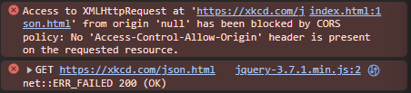

Lab 16 - JSON and APIs (XKCD comic!)
Challenge
The challenge was to figure out how to use AJAX calls and process the resulting JSON data!
Thoughts
BE SURE TO GAIN TEMP ACCESS TO THE PROXY HERE
BEFORE CLICKING THE BUTTON!!!
This lab presented a challenge, in which it seems the xkcd API isn't quite CORS compatible!
Both me and my partner ran into this problem and were stumped for a bit. Here's the error we got:

We were able to figure out a (temporary, janky) solution roughly following
this Stack Overflow solution, which detailed
how to use a demo version of cors-anywhere to use as a proxy to bypass CORS. Because of various
issues that come with having a totally open proxy, the developer had to put some limitations on
their heroku-hosted version that makes it kind of weird (for one, having to interact with the page
for temp access), but for the most part it works! Pretty happy that we found a solution!
Outside of that weird CORS proxy stuff, the rest was pretty easy! I found out that the "settings"
for AJAX calls are actually just regular objects with specific keys passed to it, and I also figured
out how to use $.when().then(), so all in all I'm pretty happy with my code! Yayy!
psst... hover over the comic for a surprise!